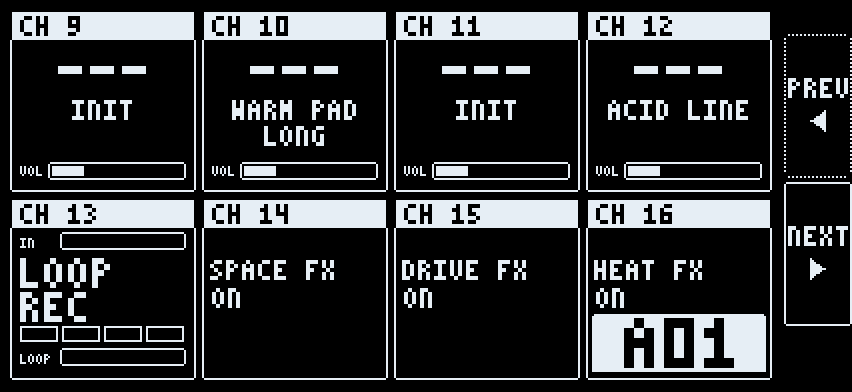

The app has four main pages: main page, setup page, mixer, recorder. PREV and NEXT on the setup page move between them.

Each box answers on one MIDI channel. Play a part from the Digitakt on its channel. Change a channel on the setup page.
| Channel | Box |
|---|---|
| 9 to 12 | Parts 1 to 4 |
| 13 to 16 | LOOPER, SPACE, DRIVE, HEAT |
A Program Change on a part's channel loads that sound slot. A Program Change on the pattern channel (default 16) selects a pattern.
Every CC starts at the Elektron default, CC 70 to 77. Turn an encoder on the Digitakt and the knob in the app moves. See Synths and CCs.